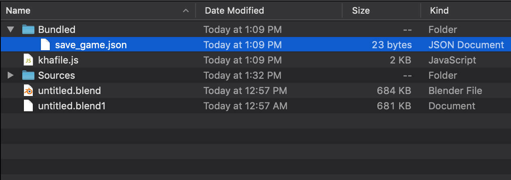

Part-1
First we will implement basics of file reading and writing for krom in-game. At the end of this part you should be able to save/load json from Bundled folder, when in-game.
We will first set-up the saving mechanism for hard-coded value.
- Create a Haxe trait
SaveLoadMechanism, we will use this for handling our save and load mechanism.
SaveLoadMechanism.hx
package arm;
class SaveLoadMechanism extends iron.Trait {
public function new() {
super();
notifyOnInit(function() {
//Only compile the code for krom platform
#if kha_krom
//Set json structure with text as 'hello World!'
var saveData = { text: "Hello World!" };
//Converts above structure to json string.
var saveDataJSON = haxe.Json.stringify(saveData);
//Get Krom's location path and add path for save_game.json.
var path = Krom.getFilesLocation() + "/save_game.json";
//Write json string to bytes.
var bytes = haxe.io.Bytes.ofString(saveDataJSON);
//Save to file from path specified above with data from bytes.
Krom.fileSaveBytes(path, bytes.getData());
#end
});
}
}
Code Explanation
#if some_conditionis called Conditional Compiling expression, here, our code will only be compiled to Krom platform.- We define structure and convert the structure into json.
- We get Krom's file location (during playing from armory, krom's file location is
root_folder/build_file/debug/krom/save_game.json) and append oursave_game.jsonto the path. - Convert our stringy json to bytes.
- Save data from bytes to path specified.
Now, if you play the game and go over to root_folder/build_file/debug/krom/ you should find save_game.json and on opening it should read {"text":"Hello World!"}, if you do, then Congratulation! You did it!
Let save save_game.json to proper place and add some keyboard input code to handle saving manually instead of saving when the game initiate.
SaveLoadMechanism.hx
package arm;
import iron.system.Input;
class SaveLoadMechanism extends iron.Trait {
//Get keyboard's input.
var kb = Input.getKeyboard();
public function new() {
super();
notifyOnUpdate(function() {
if(kb.started("f")){
save();
}
});
}
public function save(){
~
var saveDataJSON = haxe.Json.stringify(saveData);
//Move out of 3 dirs
var path = Krom.getFilesLocation() + "/../../../" + "/Bundled/save_game.json";
var bytes = haxe.io.Bytes.ofString(saveDataJSON);
~
#end
}
}
Code Explanation
- On every frame, check if key
fis pressed, than callsave() - We add
/../../../before path to move out of three directory.

Don't forget to create Bundled folder in your root directory!
We will now add reading functionality, we will read save_game.json from Bundled folder and print text value in debug console.
Now let get to code:
SaveLoadMechanism
package arm;
import iron.system.Input;
import iron.data.Data;
class SaveLoadMechanism extends iron.Trait {
var kb = Input.getKeyboard();
var saveFile = "save_game.json";
public function new() {
super();
notifyOnUpdate(function() {
if(kb.started("f")){
save();
}else if(kb.started("g")){
load();
}
});
}
public function save() { ~ }
public function load(){
//Get Blob, from `Bundled`
Data.getBlob(saveFile, function(bytes:kha.Blob) {
//Converts bytes to string.
var jsonString = bytes.toString();
//Parse value from stringy json.
var json = haxe.Json.parse(jsonString);
trace(json.text);
});
}
}
Code Explanation
- Check if
f,gis pressed and then callsave(),load()respectively. - Load blob from path specified.
- Convert the file to string and then parse json from it.
Hit Play, try pressing f and then g, Hello World! should appear in debug console, if it do than that means saving and loading work perfectly!

And that is for today! In next part we will make it save cube's Location and Rotation.